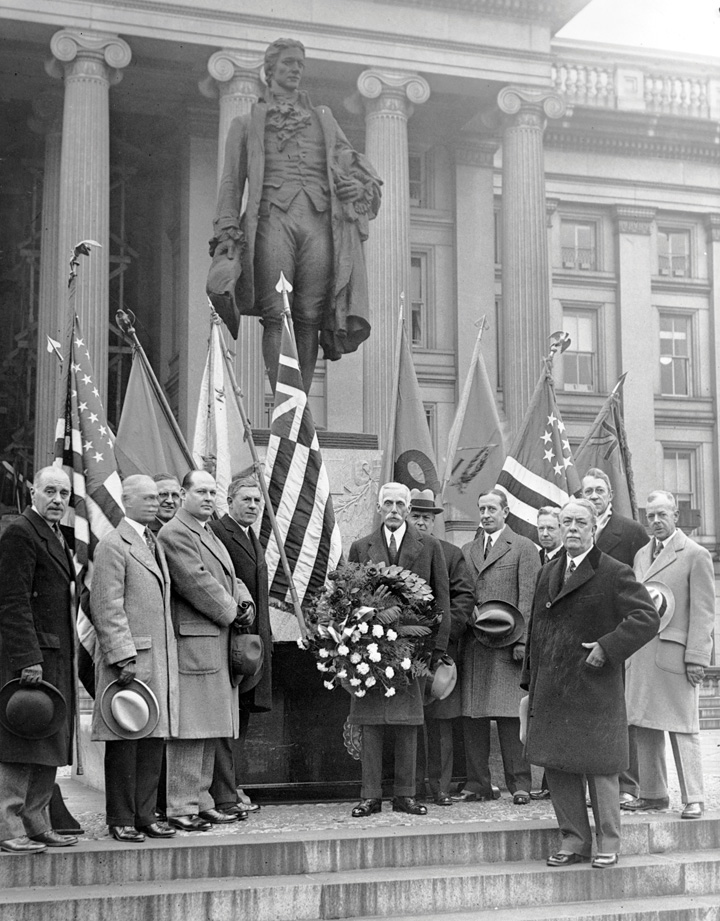
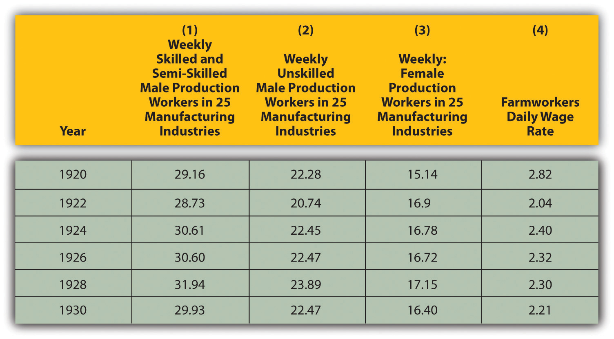
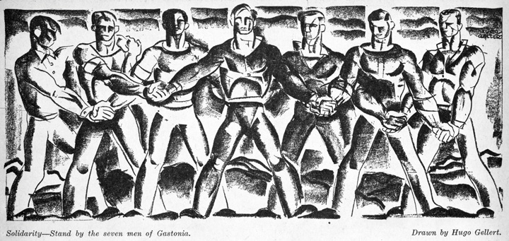
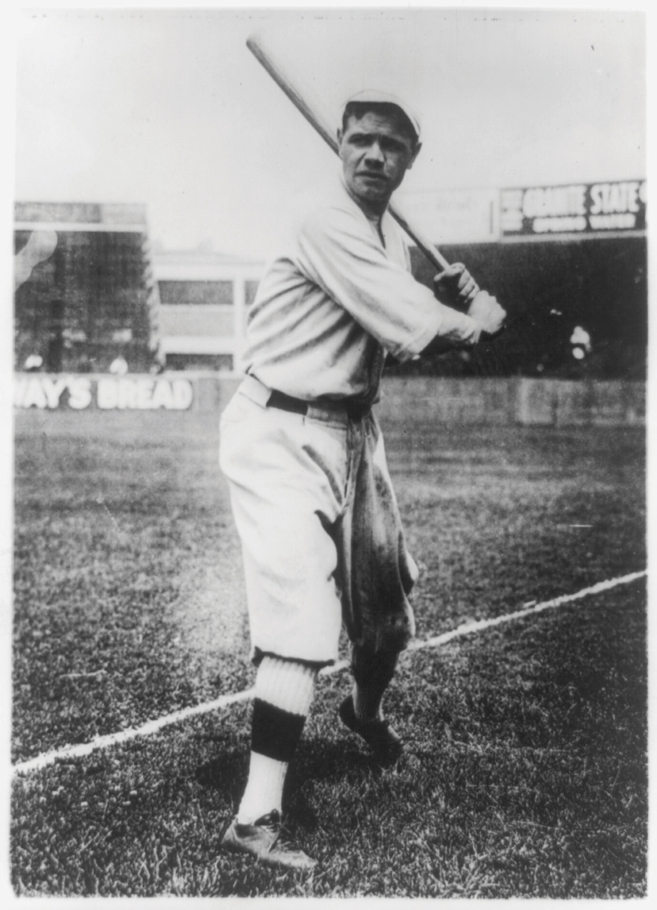
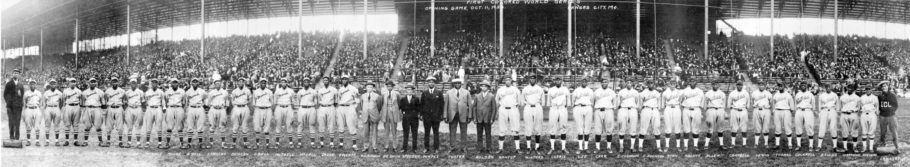
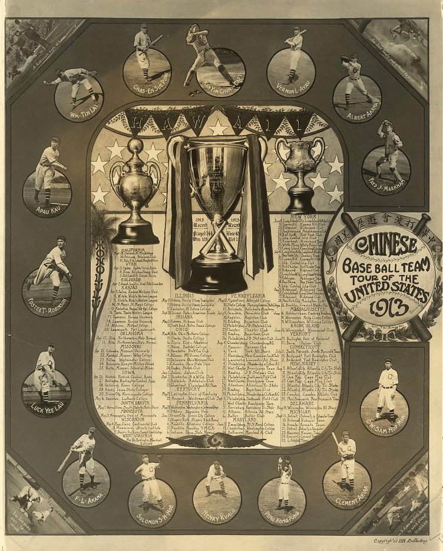

The federal government intervened on behalf of business throughout the nineteenth century, especially in matters of promoting infrastructure and development. At the same time, the federal government sought to regulate business to prevent monopoly and exploitation of consumers. Many observers argued that the government’s track record in this regard was mixed at best. Following the wartime partnership between government and industry, and the anti-Socialist hysteria of the Red Scare, the Republican administration of Warren HardingThe twenty-ninth president of the United States, Harding was a conservative publisher from Ohio whose administration is best known for a series of scandals involving several of his cabinet members. adopted an unapologetically probusiness orientation. Most government officials agreed with Harding’s Vice President Calvin Coolidge, who reputedly declared that “the business of America was business.” The attempted trust-busting of the Progressive Era gave way to toleration of oligarchy—a term that in this context refers to control of an entire industry by a handful of large corporations.
Progressives continued to compile statistics showing how US Steel, Standard Oil, General Electric, and other firms dominated their respective industries and used their positions to control workers and prices. For many Americans, the prosperity of the era seemed out of place with such an indictment of corporate America. Unemployment was at historical lows, wages were at historic highs, and it seemed that scarcity was becoming a problem of the past as Wall Street and Main Street appeared to be prospering together. Equally important, Wall Street was losing its pejorative image as investment firms hired traveling brokers that peddled investments door to door and coast to coast. For the first time, significant numbers of middle-class Americans were purchasing stocks. As a result, statistics about the wild profits of these corporations were just as likely to stimulate investment as indignation.
Figure 6.1

In reference to the Teapot Dome Scandal, the US Capitol is presented as a boiling teapot. The leasing of Wyoming oil reserves had a tremendous impact on the development of the mountainous West, while the revelation of cash bribes greatly reduced the public’s trust in the federal government.
The new probusiness climate facilitated the rise of trade associations and professional organizations that represented the interests of particular industries and professions. In the past, corporate executives traveled directly to Washington to advocate their interests. By the 1920s, some of these new organizations established offices near the nation’s capital and were able to employ specialists who dedicated themselves to advocacy among lawmakers on the behalf of their clients. Some Americans complained that the power and influence of these lobbyists constituted a nefarious “fourth branch” of government. Others argued that lobbyists circumvented the concept of democracy and introduced new opportunities for corruption. After all, they argued, these advocacy groups provided funding for congressional campaigns that appeared to many as bribes. In some cases, cash was distributed directly to the lawmakers themselves.
Several dishonest legislators were exposed in the early 1920s, and some of the biggest scandals were tied to the Harding administration itself. The first scandal was the discovery that the head of the Veterans Bureau was accepting kickbacks from government contractors and even looting medical supplies that were supposed to be used for injured veterans. Harding’s attorney general was later indicted for fraud regarding “irregularities” with the disposition of German assets that had been seized during World War I. He was also accused of receiving kickbacks from bootleggers.
The biggest scandal of the 1920s involved Secretary of the Interior Albert Fall who was believed to have accepted $400,000 in bribes. In exchange, Fall permitted private oil companies to drill on public land in Wyoming. These oil reserves, such as the massive Teapot Dome reserve, were supposed to be left undeveloped as an emergency resource for the military so that the United States would never be dependent on foreign oil during war. The incident was soon labeled the Teapot Dome ScandalErupted when news that Secretary of the Interior Albert Fall had arranged to lease the US Navy’s Oil Reserves at Teapot Dome, Wyoming, to a private oil company. Fall had received hundreds of thousands of dollars in bribes to permit drilling on publicly owned lands containing oil that had been reserved for use by the navy., a phrase that became synonymous with government corruption throughout the next generation. The public was even more enraged when Albert Fall was only ordered to pay a $100,000 fine and serve one year in jail.
Harding was not directly connected to any of these scandals and remained a popular president prior to his sudden death in August 1923. Calvin Coolidge replaced Harding as president and continued the probusiness policies favored by Harding and the Republican Party. Both of these presidents typified the profile of what many Americans expected of their presidents: a dignified leader and a model citizen. Later revelations would demonstrate that despite their images as devout Christians and family men, neither was above the temptations that ensnared many other men of wealth and power. More damaging, at least to the reputation of the late President Harding, was the revelation that he likely knew many of the details about the scandals within his administration but had failed to prevent them. Though he knew them to be incompetent or unethical, Harding delegated authority to several cabinet officials because they supported his administration and/or were personal friends from his days in Ohio politics. Known as the “Ohio Gang,” even though many of the members of Harding’s cabal were not from the Buckeye State, these Republican leaders became infamous for corruption. Many also were known to be gamblers and had numerous extramarital affairs that conflicted with their public image and espoused Christian living.
Despite the revelations of corruption, most of the legislation that was favorable to business interests during the early 1920s also promoted economic growth that provided some benefits to the nation’s overall welfare. For example, the automotive and oil industries lobbied Congress to approve the Federal Highway Act of 1921. This law provided matching grants for states to build highways and bridges. Although the interstate system would not be developed until after World War II, this program required recipients to coordinate their efforts with neighboring states to create a nationwide grid of roads.
Figure 6.2
Andrew Mellon placing a wreath at the foot of a statue honoring Alexander Hamilton. Mellon was an influential Secretary of the Treasury who supported many of the conservative views of Hamilton, a Founding Father and the first Secretary of the Treasury. Mellon was also a wealthy philanthropist who donated millions to the University of Pittsburgh, his alma mater.
Secretary of the Treasury Andrew Mellon was staunchly conservative and supported the era’s deep tax cuts for the wealthy. He also resurrected one of the Progressive goals by creating the General Accounting Office, which audited the government’s budgets and expense reports. Mellon advocated low taxes for corporations and the wealthy—a condition he believed was a prerequisite for economic expansion. Harding also appointed four conservative and probusiness appointees to the Supreme Court. Bolstered by the inclusion of these conservatives, the Supreme Court repealed federal child labor laws and upheld numerous injunctions ordering unions to halt strikes and return to work.
The Republican-controlled Congress and White House of the 1920s approved three policies that favored business interests, wealthy individuals, and some members of the middle class. Fearful that a European recovery would result in US businesses once again being forced to compete with foreign goods, Congress raised tariffs. These taxes helped to protect US businesses by making foreign goods more expensive, but the law also kept consumer prices artificially high. Second, Congress enacted a series of laws that reduced the tax rate for the wealthiest Americans from over 70 percent to just over 20 percent. Congress also raised the exemption level, which meant that a larger number of middle and upper-middle-class families were no longer required to pay any federal tax. Congress also reduced estate taxes that were assessed on large fortunes passed down to the next generation. Lastly, Congress approved reductions in government spending that resulted in balanced budgets but also led to reduced enforcement of the already-lax regulations on businesses and financiers.
Wealthy individuals and corporations benefitted from each of these decisions, at least in the short run. The tariffs led to increased profits for manufacturers, while the tax reductions permitted entrepreneurs to finance new businesses. Because some of these profits were reinvested in ways that led to job creation, a portion of the economic benefits of lower taxes for businesses and the wealthy likely benefitted the rest of the nation. It would later be apparent, however, that the majority of Americans were not earning enough money to sustain the economic rally of the 1920s, which had been built largely on consumer spending.
The tariffs made it difficult for European nations to repay their debts, and Congress was forced to permit a series of extensions on loans that would eventually default. Progressives argued that the tax reductions Andrew Mellon recommended led to concentrated wealth in the hands of the few. These individuals would later claim that the stock market crash was the result of the wealthy using their revenues to speculate in real estate and the stock market rather than invest in new businesses. By this perspective, lowering the tax rates for the wealthy might reduce stability rather than spur productive investment and job creation.
After the 1916 Congressional election, two-thirds of the House and Senate were pledged supporters of prohibition. However, many of these lawmakers were not yet convinced that a Constitutional amendment banning the production and sale of alcohol was an appropriate measure for the federal government to take up. World events and local campaigns in support of a prohibition amendment eventually overcame this reservation.
The importance of preserving grain as war gripped Europe combined with the moralistic tenor of the nation and a growing hostility to all things German. Prohibition supporters argued that the “Hun’s” brewing tradition was dangerously un-American and threatened to weaken the moral fiber of the nation. Over time, politics and religiosity mixed in ways that turned support for prohibition into a litmus test of one’s patriotism. In such a political environment, few in Congress wanted to oppose the Eighteenth AmendmentA Constitutional Amendment that outlawed the manufacture, transport, and sale of intoxicating liquors. The Eighteenth Amendment would later be repealed by the Twenty-First Amendment in 1933.. The amendment outlawed the manufacture, transport, and sale of intoxicating liquors. Congress approved the measure in December 1917, and the states quickly ratified the amendment, which took effect in January 1919.
State laws had proven ineffective in preventing the manufacture and consumption of liquor, and many critics believed the Eighteenth Amendment would prove equally ineffective. These kinds of laws, critics argued, attempted to legislate morality and impose religious views about alcohol that many Americans rejected. In their failure, these critics added, prohibition laws did little more than inspire disregard for the laws of man. Despite the passage of the Volstead Act which provided federal enforcement for the new Constitutional amendment, enforcement was lax. Bootleggers and speakeasies became more and more abundant as people looked for alternate sources of alcohol.
Figure 6.3

New York policemen watch as hundreds of gallons of whiskey are poured into the sewers. Raids such as this failed to halt the flow of alcohol during the 1920s but did create new opportunities for bootleggers and others willing to risk the consequences of breaking prohibition laws.
The resilience of the saloon was partially due to its importance as a cultural space that was important to various subcommunities throughout both rural and urban America. The saloon was where men gathered for political meetings, and local pubs usually doubled as the headquarters of a variety of fraternal organizations. Through these connections, men found that fellowship meant access to information and markets as well as references for jobs. Men who did not drink soon formed their own fraternal organizations and lodges to provide a similar space for meetings and fellowship. The same was true of women. The turn of the century saw the greatest proliferation of women’s clubs, both as separate organizations led by women and as auxiliaries of fraternal organizations for men. For most Americans, membership in these groups and local churches provided opportunities for fellowship and recreation and served as their connection to the larger world.
The Eighteenth Amendment empowered Congress to pass laws banning the production, transportation, and sale of alcoholic beverages. Congress passed the Volstead Act in the fall of 1919 over outgoing President Wilson’s veto. The law outlawed the production of any beverage with an alcohol content higher than 0.5 percent, although it was later amended to permit the production of wine for home use. The law left enforcement largely to states and local police for most of the 1920s. Penalties for violators of the Volstead Act were usually fines that did little to discourage those willing to break the law from doing so.
State and local ordinances that permitted doctors to prescribe “medicine” containing alcohol, including whiskey and other spirits, also continued. Historians estimate that 1 million gallons of whiskey, among other forms of alcohol, were prescribed each year. Disregard for the law reached all the way to the White House, which maintained an impressive selection of liquor for entertaining official guests. The rest of the nation simply purchased spirits from local bootleggers.
The Volstead Act did little to end the production, sale, or consumption of alcohol, but it did add significantly to the cost of alcohol for consumers. Although it was not the intent of reformers to merely reduce alcohol consumption, the obstacles one had to overcome to obtain alcohol at inflated prices ended the practice of daily consumption for many working class Americans. At the same time, the toleration of those who violated the law and the rarity of severe punishment led many Americans to lower their regard for law enforcement. Before long, criminal groups began making outrageous profits by supplying alcohol. Some of these groups became crime syndicates, using their liquor revenue to purchase weapons while seeking to control other vice trades such as gambling, narcotics, and prostitution.
“Organized crime” expanded significantly during the Prohibition Era. Crime bosses such as Chicago’s Al Capone created their own underground empires by committing robberies, selling illicit goods, and using fraud and intimidation to force local businesses to pay “tribute” for protection. Capone directed some of these funds to charitable groups, leading many Chicagoans to obstruct police efforts. Other police officers found Capone’s bountiful offerings of cash bribes even more persuasive.
Before Prohibition, organized crime relied more heavily upon the sale of illicit drugs and prostitution. Although these activities continued, the popular image was that Capone and others were making their wealth by providing alcohol to a thirsty nation. As a result, some Americans sympathized with Capone’s claims that he was merely providing a service that people wanted. However, Capone’s dealings with rival gangs and the police were notoriously violent. Capone and others were careful to conceal the source of their income by laundering their revenue through dozens of businesses. This made it difficult for the FBI to provide clear evidence of what everyone knew was the source of Capone’s income. Eventually, the FBI decided to try a different tactic, focusing on the front businesses that were laundering Capone’s profits but had neglected to pay taxes.
Figure 6.4

The signed verdict convicting Chicago’s Al Capone of tax evasion.
Prohibition revealed the different standards of law enforcement for the wealthy and the poor. Wealthy Americans reveled in their private cocktail parties, which were seldom disrupted by police. Those with money could avoid dealing with gangsters and purchase their spirits from pharmacies or other sources. When a group of reformers sought to close this loophole by at least limiting the quantity of whiskey a physician might prescribe, the American Medical Association lobbied in opposition. While most doctors questioned the health benefits of “medicinal whisky,” they opposed any law that might open the door for other government regulations of what doctors could prescribe for their patients. Critics countered that the AMA was simply hoping to continue a lucrative practice that accounted for tremendous profits among some of its members.
Radio technology had proven its value in wartime and would revolutionize communications during the early 1920s. By the end of the decade, the first commercial radio networks were born, leading to the syndication of popular programs that could be heard across the nation. The aviation industry also demonstrated the potential of fixed-wing aircraft during the war. US companies quickly expanded from producing a few hundred airplanes each year to 5,000 per year by the end of the decade. By the late 1920s, dozens of major cities were connected by a network of locally owned passenger lines that began offering scheduled flights. Few Americans were able to take advantage of this new mode of air transportation. By the end of the decade, however, one in five Americans owned an automobile. The proliferation of the automobile heralded the beginning of a veritable revolution from public to private transportation. The utility of the automobile was limited in the first years of the new century by prohibitive costs and the lack of roads that were suitable for cars. Once considered the plaything of the super rich, by the late 1920s the automobile became the symbol of middle-class life. Personal ownership of automobiles also altered the way city people thought about urban spaces. With the proliferation of the automobile, cities were planned and constructed around modes of transportation rather than the other way around. The automobile also allowed for the expansion of suburbs beyond the reach of streetcar lines.
Henry FordEntrepreneur who founded Ford Motor Company, which applied assembly line techniques to the production of automobiles. Ford was hostile to unions and a difficult taskmaster, yet he paid his employees more than prevailing wages, intending to command their loyalty and create more consumers for his products. did not invent the automobile or the assembly line. Instead, he was the most successful at marrying these two technologies together in ways that increased efficiency and reduced costs. Small household goods were manufactured on assembly lines and canned meats were made by stripping meat from carcasses on “disassembly” lines. Prior to the early 1900s, automobile chassis were placed on blocks, and workers brought the parts to the cars to be assembled one at a time. In 1901, Ransom E. Olds of Lansing had shown that the assembly line could be made to work for automotive production, despite the size and weight of the product. However, the Oldsmobile factory burned to the ground, and Henry Ford invested in a much larger factory that built upon Olds’ methods. Ford’s heavy steel rails and conveyer belts moved a car’s chassis down a line. As a result, workers could stand in one place and complete one simple task, such as securing a specific bolt or adding a headlamp as cars moved along the line.
Ford’s newest assembly line, complete with its massive moving belts, was up and running in 1913. Ford produced 250,000 Model T automobiles that year. This was thirty times as many cars as Ford had produced a few years prior; it was also more cars than Oldsmobile and over eighty other competing automakers based primarily out of Ohio, Michigan, and Illinois had ever made. A decade later, Ford was producing 2 million Model Ts, which were nearly identical to the earlier models except for the price. Ford was able to take advantage of economies of scale through mass production; consequently, the price of the Model T dropped from over $800 to under $300. Other automakers produced more diverse offerings, and many competing automakers produced better or cheaper cars. However, in 1913 no one could match the quality of the Model T for the price Ford was charging. As for the monotony of mass production, Ford quipped that his customers could have his vehicle in any color they chose so long as that color was black.
Figure 6.5

Ford automobiles being produced on a Detroit assembly line in 1923.
The work was routine and could be completed by anyone with minimal training. As a result, Ford no longer needed to hire workers with mechanical expertise. Instead, he hired unskilled workers but offered better wages than they might make on other assembly lines. Ford famously introduced the Five Dollar Plan, a daily wage that was roughly double the $2–$3 pay rate that was typical for factory work. Ford employees were required to submit to investigations by Ford’s Social Department. Ford desired only sober workers who shunned cigarettes and fast lifestyles. By the mid-1920s, the investigators no longer made home visits to determine whether factory workers drank alcohol or engaged in other behaviors their paternalistic boss considered a vice. Instead, they were more likely to investigate a worker’s political beliefs. Anyone who embraced Socialism or even considered starting a union would be terminated.
The high wages Ford workers earned permitted most employees to purchase their own automobile. These workers were required to make that purchase a Ford automobile or else they would share the fate of those who attempted to start a union in a Ford plant. Given the high wages Ford offered, most workers tolerated Ford’s demands and shunned unionization as Socialistic or even un-American. Ford himself wrapped his techniques of mass production, low prices, and high wages in the language of Americana. The 23 million automobiles on the road in 1929 satisfied Ford that he had democratized the automobile by bringing car ownership to the masses.
Ford’s assembly line methods were studied by the emerging business colleges and perfected to maximize efficiency of movement. Older methods of production that required skilled craftsmen largely disappeared, as did the level of job satisfaction workers expressed once they no longer felt connected to the products they produced. Instead of seeing a finished product or working closely with a team, workers stood in one place and performed repetitive tasks. The system was tremendously efficient, and it did provide the opportunity for more jobs among nonskilled workers. Worker productivity in most industrial fields increased by about 50 percent while real wages for the average factory worker also increased. However, these wages usually grew by no more than 10 percent over the decade. The average workweek declined to just over forty hours in some fields—a long goal of the labor movement. However, the typical workweek for industrial workers remained six days of forty-eight hours of labor. In addition, upward mobility was hindered by the elimination of most skilled positions, and a new generation of factory worker was even more disconnected from his labor than in the past.
Figure 6.6 Real Average Weekly or Daily Earnings for Selected Occupations, 1920–1930
Previous generations of farmers and craftsmen had been able to see tangible evidence of their labor. The only workers in factories with assembly lines who even saw the finished product were those who worked on loading docks, and they usually did not participate in the production of goods. Factory work had always featured monotony, a contest between one’s will and the time clock. But workers could at least identify the products they had made before the adoption of the assembly line. Consequently, workers no longer identified themselves in terms of their jobs, as farmers and craftsmen had in the past. No celebration of the harvest took place; no trade or skill provided a sense of identity and union. Unskilled workers were much more likely to change employers and industries many times throughout their lives. As a result, the urban worker sought satisfaction and meaning outside of their jobs in ways that led to the proliferation of recreational activities and the celebration of consumption rather than production.
The labor movement’s postwar gains were quickly neutralized within the climate of the Red Scare. The conservative orientation of the federal government throughout the three Republican administrations of the 1920s likewise created an environment that was hostile toward organized labor. Employers rallied around a strategy they branded the American PlanThe name coined by antiunion industrialists who pledged to never negotiate with union leaders. The American Plan sought to create the image that the “open shop” was synonymous with freedom and other American values, while the “closed shop” forced workers to join unions. Critics argued that this was simply a devious method of spinning antiunion activities that harmed workers., a series of ideas and tactics that sought to challenge the legitimacy of unions and outlaw provisions that required workers to join unions.
As the name indicates, the American Plan sought to portray any provision requiring a worker to join a union as contrary to “American” principles, such as freedom of choice. Some manufacturers even placed American flags on products that had been made by nonunion labor in hopes of branding organized labor as something that was foreign to the ideals and values of the nation. Central to this tactic were attempts to casually equate unions with Socialism. Because both organized labor and Socialist parties were growing in popularity throughout Europe, supporters of the American Plan simply had to create the impression that these two trends were intrinsically connected.
Businesses lobbied government officials to outlaw collective bargaining throughout the 1920s. They based their argument on the idea that individual workers should be completely free to contract independently rather than be bound by a single contract negotiated on their behalf. Labor leaders contended that the intent of the American Plan was simply to reduce the collective power of unions. They argued that employers were disingenuous in claiming that they were motivated by a desire to liberate workers from union contracts. Reminding the public of the violence used against workers who tried to start unions in the past, union leaders sarcastically asked what had suddenly made modern corporations so very concerned with the freedoms of their workers.
Figure 6.7

In August 1921, these West Virginia miners clashed with federal troops in the Battle of Blair Mountain. As many as fifteen thousand miners marched to southern West Virginia to rescue men who had been imprisoned for trying to form labor unions. After a million rounds were fired by both sides, federal troops and even a bomber squadron forced the men to return to their own mining camps. Union leaders were arrested while mine owners enlisted the paranoia surrounding the Red Scare to attack the culture of union activism as “un-American.”
Labor leaders also sought to explain the difference between collective bargaining and the collective ownership of Socialism. However, without the access to the media and the financial resources enjoyed by many industrialists, labor leaders found themselves on the outside and on the defensive. The conservative political climate that followed in the wake of the Red Scare and the continued notion that unionization was a gateway to Socialism plagued the labor movement throughout the 1920s. Despite the growth of industry and creation of millions of new jobs, union membership declined from 5 million to below 3.5 million by the late 1920s.
The overall percentage of workers who were members of unions also declined from 18 percent to 10 percent in the 1920s. Part of the reason for organized labor’s trouble was the slight decrease in the percentage of workers employed in blue-collar jobs due to technology and automation. The emergence of the modern corporation created tens of thousands of new jobs in clerical fields, but these usually remained impervious to organization. Despite the decline in percentages and overall numbers of union workers, labor strikes remained the most potent weapon in the arsenal of labor activism. One of the largest and most radical strikes occurred in a location that had been least welcoming to unions in the past—the South. Northern textile mills had moved to the South in previous decades for precisely this reason. During the 1920s, some of these southern mills were paying workers less than $10 per week at a time when the national average wage for such work exceeded $20. In addition, southern textile mills in the 1920s were the first to experiment with the “stretch-out”—a technique where employers simply fired a large number of workers and required those who remained to make up the slack by working faster. The stretch-out and low pay led to strikes in Tennessee, the Carolinas, and even in a handful of textile mills in the Deep South.
A biracial union backed by the Communist Party emerged in Gastonia, North Carolina, in the late 1920s. This new Southern radicalism threatened to build and maintain worker solidarity across the racial divide by focusing on social class rather than race. In 1929, the union led its white and black workers to the picket lines in protest of wages that failed to provide even the basic necessities of life. Area mills recognized the potential threat of class consciousness in a region where black and white workers had been played against one another for generations. With the support of competing mills, management brought in replacement workers and sought to divide the white and black strikers.
The specter of Communism and “racial amalgamation” led to increased tensions throughout Gastonia until a gun battle left the chief of police and at least one union supporter dead. Seven workers were given extended prison sentences for their possible roles in the death of the police chief. There was barely any investigation into the death of the black union supporter. Shortly thereafter, a female strike leader was shot and killed by mill guards. Together with increased police harassment of the unions and their leaders, populist appeals to racism, and the replacement of striking workers, interracial union activism was only a temporary feature in the South during the 1920s.
Contrary to the Communist propaganda that spread throughout the textile mills, business owners did not always personify the caricature of the greedy Capitalist. In fact, many industrialists tested new ideas from a common belief that humane treatment of workers would lead to increased productivity. “Welfare Capitalism” became the new buzzword in the emerging business colleges and throughout Wall Street. Some business leaders hoped to forestall labor militancy by offering certain perquisites such as profit sharing, pensions, and paid vacations. These kinds of benefits would still be rare for at least another generation, yet more employers than ever before provided limited funding for workers’ recreation and social clubs. In each case, the goal was to reduce turnover and labor activism. However, some employers convinced themselves that they were beloved by their workers who completely trusted their well-being to the care of their benevolent employer.
Figure 6.8
Supporters of the Gastonia, North Carolina, strike called on all mill workers to stand together in solidarity behind fellow workers that had been charged with murder. However, those workers who supported the strike were evicted from their homes, which were owned by the mill. Together with economic pressure and armed guards who shot and killed a female strike leader, the 1929 strike was broken.
Workers took advantage of these services but remained suspicious of welfare Capitalism, largely due to repeated failure of management to live up to its own lofty rhetoric. Some of these employer-sponsored organizations were designed to replace unions or eliminate working men’s fraternal organizations. Employers continued to intentionally mix and then separate workers of various ethnicities and regional identities in hopes of keeping them divided and suspicious of one another. With the exception of nonwhite workers who continued to experience discrimination, efforts to exploit Old World animosities became less effective as the twentieth century progressed. For example, descendants of Irish and English immigrants were less likely to view one another as natural enemies than their parents had been. New immigrants from regions such as Northern and Southern Italy found that when they arrived in America, they were simply considered “Italians.” Because they faced the same discrimination and prejudice, immigrants put aside their regional rivalries and began to see themselves as Italian-Americans rather than Romans, Neapolitans, Venetians, or Sicilians. Over time, US factories would encourage assimilation and the creation of a common “white” identity among immigrants and old-stock Americans alike.
Other companies experimented with procedures for soliciting workers’ concerns in ways that were similar to unions, but they did not charge membership fees. These groups had little power beyond what management allowed but often secured modest reforms or one-time bonuses. Management often used these “company unions” to discredit actual unions by agreeing to negotiate only with the representatives of the company union. For example, if the steelworker’s union pressed for a pay raise, the company might grant a one-time bonus to forestall a possible strike. Just to make sure the union did not receive credit for the increase, the company would announce the bonus through the representatives of the company-controlled union. As a result, they hoped workers would perceive the company union as more effective than the independent union that deducted fees from their paychecks.
The decline of labor activism during the 1920s was the result of two leading factors: the conservative political climate of the decade and the general prosperity that led to low unemployment and slightly higher wages. Conservative legislatures continued to vote down anti–child labor laws, and the Supreme Court reversed a handful of provisions that would have limited the number of children in the workforce. Farm and business lobbies became so powerful during the 1920s that a proposed Constitutional amendment banning child labor was approved by only six state legislatures. Unions lobbied on behalf of the amendment but were overwhelmed by the resources of industry. In addition, unemployment dropped to below 5 percent during the mid-1920s, which eliminated some of the financial threat that children’s labor posed to working men and women. Similar to periods of low unemployment in the past, however, workers could expect their jobs to be eliminated if the economy began to slow.
Sell them their dreams. Sell them what they longed for and hoped for and almost despised of having.…Sell them dreams—dreams of country clubs and proms and visions of what might happen if only. After all, people don’t buy things to have things. They buy things to work for them. They buy hope—hope of what your merchandise will do for them. Sell them this hope and you won’t have to worry about selling them goods.
—Advice to participants in a 1923 convention of marketers
The increased production of consumer goods following World War I required an equal commitment to consumption. Manufacturers and merchants rose to the challenge by embracing the burgeoning field of marketing to convince potential customers that they needed the new products that were pouring off US assembly lines. More than previous generations, marketers in the 1920s sought to manipulate the emotions of prospective customers by convincing them that the good life and a life of goods went hand in hand.
To succeed, it was not enough for advertisers to simply sell products as they had in the past. Instead, the new marketing courses taught advertisers how to sell a vision of what a product might do for the customer. Before the turn of the century, the Wharton School at the University of Pennsylvania was nearly alone in its professional training programs in the field of business. Soon, colleges across the country created professional business degree programs to attract students as well as to meet political demands of business leaders and conservative lawmakers who began questioning the value of liberal arts degrees. By the end of the decade, advocates of traditional fields of learning were on the defensive as the United States spent more money on marketing than on education.
Figure 6.9

Storefront displays were studied by marketers who sought to manipulate a shopper’s emotions and create the image that a product would confer status and enhance a customer’s life beyond that product’s explicit utility.
In the burgeoning fields of finance and marketing, “making money” was far removed from making products. The beauty industry was created by marketing, convincing women that they might be beautiful if only they purchased a particular product. A generation prior, women seldom looked at themselves in the mirror more than a couple times a day. By 1920, women began carrying purses that contained an arsenal of beauty products, some of which actually had mirrors built into their carrying cases. Marketers labored to eliminate the negative stigma of make-up, which had once been a calling card of the streetwalker.
Soon it was not enough simply to sell a few facial cosmetic products. “The average American woman has sixteen square feet of skin,” a promoter of the beauty industry remarked during the 1930s. As a result, he was confident that the $2 billion spent on cosmetics was only a fraction of the possibility if women could be convinced that they needed lotions, perfumes, and accessories to accompany seasonal wardrobes and other invented fashions. Accompanying each of these products was a new science designed to examine the effectiveness of storefront displays, interior designs, and the use of light and space to direct a shopper’s attention and manipulate emotions.
What was true of emerging fields such as the beauty industry was doubly true in established markets of consumer goods. The agrarian producer culture of the nineteenth century was giving way to a more transient urban culture where work was valued primarily as a means of providing income. Shopping had been both a masculine venture and a community event, a rare break from work on the farm and a time when men traveled to nearby towns to conduct business among other men they knew personally. By the 1920s, shopping was transforming into an individual task usually performed by married women on behalf of their families and in the company of strangers. Urban shopping districts emerged as feminized spaces in downtown districts that had previously not even included public restrooms for women. And for those who could afford it, shopping was becoming a pleasurable experience in a culture that increasingly glorified consumption.
Figure 6.10
Although athletes such as boxers had achieved international fame, Babe Ruth emerged as the first global icon of team sports during the 1920s.
If notions of autonomy and material security through land ownership no longer defined the American Dream, the rising standard of living did. Pleasure and acquisition came to be viewed as the reason for labor, and both were achieved by shopping. Through the calculated actions of business leaders and the willing acquiescence of the middle-class consumer, a new culture was formed that prized consumption as the ultimate expression of happiness and success. Little noticed at the time, the democratization of desire had encouraged many to value luxury over security. Well over half of the automobiles that were purchased at this time were bought with credit. Perhaps even more revealing, a small number were making impulse purchases with something new called a “personal line of credit.” For most workers, these purchases were made under the assumption that their future earnings would increase. What they did not realize was that consumer credit was a response by business leaders who were becoming increasingly aware that the number of consumers who could afford to buy their products with cash was beginning to peak.
Eventually, even the supply of consumers who could buy merchandise on credit would also begin to crest. In the meantime, more and more Americans enjoyed slightly higher wages and a workweek that had declined from over fifty hours per week to just over forty-five hours. The entertainment industry emerged in response to the increase in disposable income and time more workers enjoyed during the 1920s. These diversions also sought to fill a void left by the disconnect between employees and their jobs. Workers might not find their time on the factory floor or at their desks meaningful and satisfying, but they could use their time away from work to pursue pleasure.
By the late 1920s, motion pictures had advanced from the novelty of nickelodeons and scratchy silent pictures to feature films with synchronized sound. Spectator sports proliferated to include tennis, golf, and professional football, alongside perennial favorites such as college football, boxing, and horseracing. However, baseball remained the American pastime and defined American popular culture as nothing else had. Athletes such as Babe RuthArguably the greatest hitter in Major League Baseball, Ruth was a pitcher for the Boston Red Sox prior to a controversial trade to the archrival New York Yankees. Ruth was the cultural icon of his day, famous for both his legendary swing and his fast lifestyle that for many was emblematic of the excesses of the 1920s. transcended sport and celebrity to become an international symbol of the United States. One of only two survivors out of seven children, Ruth was raised by the streets of Baltimore and the Sisters of St. Mary’s. Undeniably talented yet susceptible to vice, Ruth possessed more than his share of that uniquely American gregariousness that horrified and charmed at the same time. Because of his talent, Ruth became baseball during the era when baseball was America.
Jack Trice became the first African American football player at the college now known as Iowa State University. He was more known for his desire to study animal husbandry than his football skills, and his desire to share his knowledge with Southern black farmers reminded his classmates of the famous African American botanist and Iowa State alum George Washington Carver. Trice played his first and only game on October 6, 1923, breaking his collarbone on the second play of the game. Trice insisted he was uninjured and returned to the game where some believe opposing players intentionally sought to reinjure him because of his race. Trice was taken to the emergency room and released, only to die two days later of internal injuries. Trice’s service to the team was memorialized throughout 1923, after which he was forgotten until a local history project coincided with a new football stadium in 1973. ISU students were active in the civil rights movement and demanded that the new stadium be named after Trice. Administration and alumni opposed the plan, pointing out that Trice had only played one game. A decade later, students finally won the right to name the field after Trice, but many were not satisfied and raised funds to build a statue to commemorate Trice. In 1997, after a quarter century of petitions and letters by students, a new generation of alumni and administrators consented. Iowa State now plays all of its home games at Jack Trice Stadium.
Consider the ways that history and memory change over time as reflected by this story.
By October 1928, the question of the color line in towns like Baltimore had seemingly been answered. The schools were segregated by law, while churches, theaters, and neighborhoods were segregated by custom. Black and white residents ate at different restaurants, slept in different hotels, and even visited their loved ones in separate hospitals. Children played at segregated YMCA branches. Adults attended social and political functions of segregated clubs. But at least one event during that month demonstrates that race relations were never quite as simple as they may appear. That month, the Baltimore Black Sox of the Eastern Colored League defeated an all-white All-Star team composed of some of the best players in the major leagues. Ten thousand fans witnessed the game, and there were no reports of racial violence. Despite efforts to prevent black fans from attending by raising gate prices throughout the day, several thousand black fans witnessed their team prevail.
Figure 6.11
The Negro National League was the first commercially successful African American baseball league. In 1924, the champion of this league, the Kansas City Monarchs, defeated the champion of the Eastern Colored League, Pennsylvania’s Hilldale club and claimed the title as the champion of what became known as the “Colored World Series.”
The victory of the Black Sox was not an uncommon scene throughout the 1920s. In fact, Negro League teams had a winning record against the all-white major leaguers that challenged them. The record was ironically aided by organized baseball’s attempt to prevent these games from happening. Following a series of victories by teams like the St. Louis Stars, New York Black Yankees, and Homestead Grays of Pennsylvania over their local major league teams, Commissioner Kenesaw Mountain Landis ruled that major league clubs could no longer challenge black teams. However, these contests were the most popular exposition games of the season, and they sold tickets and filled ballparks. As a result, white major leaguers simply assembled their own teams of “all stars” composed of players from area teams. Given the desire of players to maximize their share of the gate receipts, these all-star teams often lacked the depth of regular season pitching rosters. As a result, Landis’s ruling increased the tendency of the Negro League teams to prevail over whites.
One must be careful not to exaggerate these symbolic victories over Jim Crow. Placed in a larger context, these baseball games pale in comparison with the progress that was forged in classrooms and courtrooms. Yet for the thousands who attended these games, especially those laboring behind the color line, these victories had profound meaning. For example, in 1925, an all-black, semipro team in Wichita, Kansas, defeated a team representing the local Ku Klux Klan. The schools of Wichita remained segregated the next morning, but surely those who witnessed the game thought about the larger meaning of the afternoon’s events.
From a sociological point of view, the Monarchs have done more than any other single agent in Kansas City to break down the damnable outrage of color prejudice that exists in the city…[When]…both races sit side by side and root for their particular favorite and think nothing of it, then after a while the same relation may be carried to the workshop, and the ball grounds may be the means of causing someone to be employed where he would not otherwise have been considered, just because “he sat next to me out at the ball park Sunday—he’s a pretty good fellow.”
—Kansas City Call (African American newspaper), October 27, 1922
As a touring exhibit demonstrated nearly a century later, baseball was America in the 1920s. The national pastime mirrored the diversity of the nation and any town with more than a few hundred residents sponsored a team that was the pride of the community. On any given Sunday afternoon, nearly as many Americans could be found at the local ballpark as had attended church in the morning. The teams mirrored the diversity of the congregants. German immigrants in North Dakota and Jewish immigrants in New York City commemorated each Fourth of July by playing the American game, a celebration of their new nation and a proud display of their ethnic unity as they challenged teams from other immigrant groups.
Women’s teams had been competing since Vassar College’s first team took the field in 1866, most famously as part of the touring “Bloomer Girls” teams of the turn of the century. Native American teams toured as well, blurring the lines of sport, showmanship, and accommodation to the expected stereotypes of the white audiences. Japanese American teams like the Fresno Athletics defeated the best college and semipro teams on the West Coast. When not playing for the Yankees, Babe Ruth toured the nation throughout the 1920s as his team of all-stars took on all of these diverse local players. “Organized baseball” consisting of the Major League and its Minor League affiliates had drawn the color line since the late nineteenth century, but barnstorming teams such as Ruth’s were more concerned about revenue than the regulations of their commissioner. As a result, Ruth welcomed the competition of African American baseball greats such as Josh GibsonSometimes referred to as the “black Babe Ruth,” Gibson compiled the most impressive career statistics in the history of the sport, leading some scholars of the Negro Leagues to argue that Ruth should be called the “white Josh Gibson.” Gibson played among many of the greatest ballplayers of all races in the United States, the Caribbean, and Latin America, but owing to race he was excluded from the Major Leagues., who many believe was the greatest slugger of the era. Ruth also played alongside Japanese American stars such as Kenichi Zenimura, the founder of the Fresno Athletics.
Figure 6.12
Asian Americans on the West Coast formed competitive baseball teams. This 1913 poster advertises a touring team composed of Asian Americans who lived in Hawaii and played against college teams throughout the American West.
In addition, thousands of white and black players from the Major Leagues and Negro Leagues played in Cuba, the Dominican Republic, Mexico, and various Caribbean and Latin American countries each summer. These tours resulted in the discovery of hundreds of great Latino ballplayers, many of whom traveled and played in the United States on international touring teams or as players on Negro League teams. These ballplayers were role models, ambassadors, leading men in their community, and some of the first and most visible activists against segregation as they traveled through the nation.
The celebrity status of a team might erode racial barriers. At other times, black players confronted segregation directly by demanding respect and equal accommodations. However, one must remember that these men were ballplayers, managers, and owners above all else. Team members were most concerned with their ability to play the game they loved, and owners had a vested interest in minimizing racial conflict. They could not afford to take chances with alienating white spectators or demand equal accommodations at the risk of being placed in jail during an important road trip. As a result, the teams worked to avoid confrontation by planning their trips along familiar routes, patronizing black-owned businesses, and staying with black families in small towns without black-owned restaurants and hotels.
A handful of African American teams sought refuge from America’s binary color line by choosing names such as the Cuban Stars, thereby blurring the line between Afro-Caribbean and Afro-American. About fifty Latino players with light complexions and surnames that reflected the European Spanish heritage of many Caribbean islanders were even deemed “racially eligible” to play for Major League teams. The inclusion of foreign and American-born players of Latino heritage further demonstrated the middle ground between black and white. The complexion of most Caribbean islanders was usually too dark to pass as “Castilian” or any of the other creative euphemisms managers sought to apply to a talented ballplayer they wanted to convince the rest of the world was a descendent of European conquistadors. The existence of these charades, as well as several attempts to “pass” a black player as Native American, demonstrated that race was a social construction rather than a scientifically identifiable category.